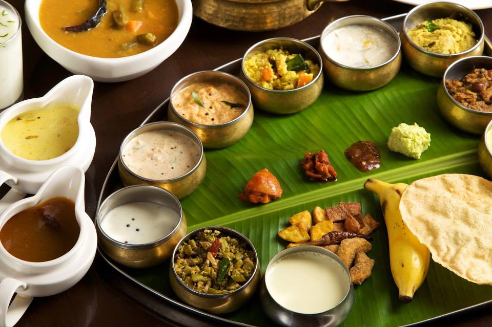
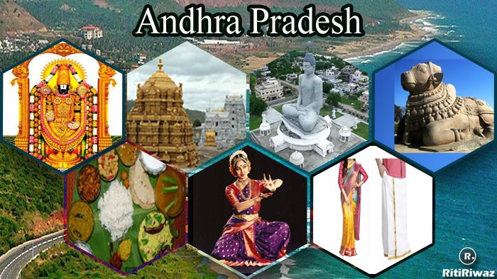
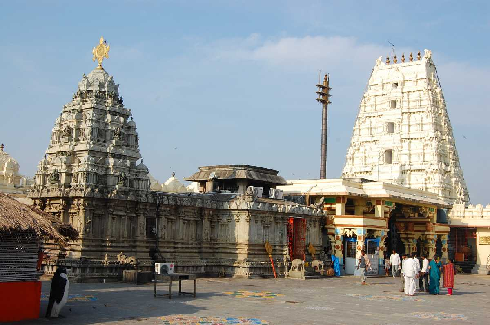

| ✧ Aspect | Information |
|---|---|
| ✧ Capital | Amaravati |
| ✧ Chief minister | Y. S. Jaganmohan Reddy |
| ✧ Largest City | Visakhapatnam |
| ✧ Districts | 13 |
| ✧ Official Language | Telugu |
| ✧ Other Language | Hindi, Tamil, Kannada, Marathi, and Oriya. |
| ✧ Population | Approximately 54 million |
| ✧ Area | 162,975 square kilometers |
| ✧ Major Rivers | Krishna, Godavari |
| ✧ Major Industries | Agriculture, Information Technology, Textiles, Fisheries |
| ✧ Popular Places | Tirupati Temple, Visakhapatnam Beaches, Amaravati Buddhist Sites, Araku Valley |
Traditional Dresses in Andhra Pradesh includes sarees for women, with the most famous being the Kalamkari sarees and the Gadwal sarees. For men, traditional attire includes the Dhoti and Kurta, often accompanied by a headpiece called the Pancha.
Andhra Pradesh, situated in the southeastern part of India, has a rich historical legacy dating back to ancient times. The region has been ruled by various dynasties and empires, each leaving its mark on its culture and heritage.
The early history of Andhra Pradesh is characterized by the rule of dynasties such as the Satavahanas, Ikshvakus, and Eastern Chalukyas. These kingdoms contributed significantly to the development of art, architecture, and literature in the region.
During the medieval period, Andhra Pradesh witnessed the rule of the Kakatiyas, who were known for their architectural marvels such as the Warangal Fort and the Thousand Pillar Temple. The region also saw the influence of the Vijayanagara Empire, which promoted Hindu culture and art.
The modern history of Andhra Pradesh began with the establishment of the Golconda Sultanate and later the Qutb Shahi dynasty. The region became a part of the Mughal Empire before coming under British rule in the 18th century.
After India gained independence in 1947, Andhra Pradesh emerged as a linguistic state in 1956, comprising Telugu-speaking regions. Over the years, the state has witnessed rapid industrialization and development, making it one of the progressive states in India.


